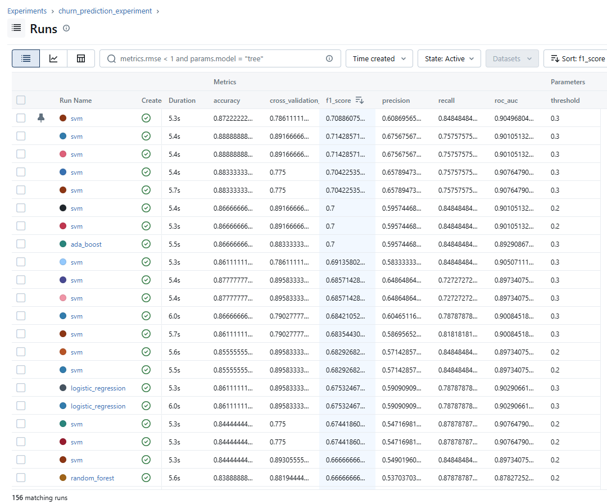

Overview
This project demonstrates an end-to-end ML workflow: experiment tracking (MLflow), model selection, threshold tuning, and deployment behind a FastAPI service. The API returns churn probability and a thresholded label suitable for downstream systems. It uses a public churn dataset for a Marketing Agency and their customers buying their advertisments.
Problem
Predict whether a customer will churn based on basic account features. Optimise for recall and F1 to catch as many churners as possible.
Deliverable
A reproducible training pipeline and a deployable REST endpoint with documented inputs/outputs.
Tech stack
- Python, scikit-learn
- MLflow tracking (runs, params, metrics)
- Dockerfile
- FastAPI + Uvicorn
- Model artifact loading (joblib)
Data
The below table shows public marketing data for an advertising firm containing details about their customers and if they churned or not. This data can be used to predict future customers will churn using supervised learning.
Dataset source: Kaggle Customer Churn Dataset . Full dataset includes 900 customers represented as each row.
Approach and Methodology
The models were chosen for their strong performance of tabular data and different approaches to learning patterns.
Overview
- 4 models trialed
- 156 runs tracked using MLflow
- Metric tracking to determine model performance
- Threshold reduced from 0.5 to 0.1 - 0.3 due to moderately imbalanced classes in dataset
- Grid parameter search used to expand performance range of runs.
- Cross validation used to help fit data better to models
- SVM performed the best with a well balanced F1 score to recall score

Results
Chosen operating point
| Metric | Value | Usefulness |
|---|---|---|
| Recall | 0.85 | How many churners are correctly caught. |
| Precision | 0.61 | Controls false positives. |
| F1 | 0.71 | Balanced view of precision vs recall. |
| ROC-AUC | 0.90 | Strong class separation capability. |
| Threshold | 0.30 | Lower threshold improves recall for churn. |
Why this model
Many model runs achieved a perfect 1 for recall, meaning every churn case is picked up. However, this was at a huge trade-off with precision, leading to very poor non-churn classifications. The selected run had the highest recall balanced with F1, which from tests reflected the most effective prediction model with a weight towards catching potential churners.
Whilst these scores show decent performance on the chosen model, it is in my view that a larger dataset would be the most effective variable at improving these scores even further.
Architecture
Flow
Next Steps
To be most effective in a production environment, I would recommend the following next steps:
- Expand available features such as account growth or purchase trends to improve signal
- Increase size of dataset, analysing more customers to increase metrics
- Examine feature importance using SHAP to understand what features contribute most
- Implement model monitoring for data drift and model retraining
Try the model yourself
Live Prediction
Model served via FastAPI and deployed on Fly.io (public REST endpoint).
Or run locally
1) Clone repo
git clone https://github.com/Josh-Swan/churn-api-demo.git
cd churn-api2) Install
pip install -r requirements.txt3) Start the server
uvicorn app:app --host 0.0.0.0 --port 8000 --reloadhttp://localhost:8000/docs to test interactively.
4) Example curl
curl -X POST "http://localhost:8000/predict" \
-H "Content-Type: application/json" \
-d '{"rows":[[45,6749.49,0,5.88,14]]}'